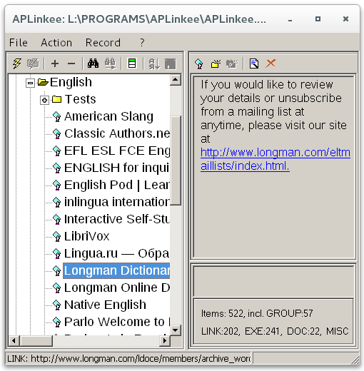

Здесь можно скачать несколько программок, полезных в быту и на производстве ;)
Скачайте reportf.zip (~500 Kb).
Это генератор отчетов в Word'овском формате RTF. Поддерживаются 999 уровней детализации и все присущие Word'у прелести (таблицы, графика, колонтитулы, колонки и пр.).
Пригодится всем, кто, как я, например, подустал от капризов QuickReport'a, и хотел бы заменить его чем-нибудь более
- (килобайт на 200) компактным;
- надёжным;
- переносимым;
- удобным;
- простым;
- открытым;
- совместимым с DOS;
- и т.д, и т.п.
Есть подозрение, что RepoRTF всем этим требованиям удовлетворяет.
В вашем распоряжении исходные тексты RepoRTFM.cpp (для BCB и Visual C++), RepoRTFM.pas (для Delphi), RepoRTFL.cpp и RepoRTFL.pas для иллюстрации вызова функции rtf_CreateReport, исполняемые модули RepoRTF.exe и RepoRTFL.exe, модули интерфейсных функций reportfo.cpp, reportfo.pas, reportf.prg и два десятка контрольных примеров к ним, с подробными комментариями, плюс руководство пользователя.
Даже ДОСовские рабочие станции благодаря RepoRTF клепают RTF-отчеты на сетевом лазернике так, что любо-дорого посмотреть.
Скачайте replstr.rar.
Это полезная мелочь, позволяющая в пакетном режиме обрабатывать список текстовых файлов (по шаблону с использованием * и ?), заменяя в них строки по заданному практически неограниченному списку.
Список задается в ini-файле. Пример такого ini-файла есть в replstr.zip. В частности, заменяя 4-символьные коды русских букв в rtf-файлах, можно ужать их в 2-3 раза. Большие rtf-тексты особенно хороши для такой утрамбовки, не только в смысле размеров, но и в смысле скорости их загрузки в программах типа Word или FVords.
Формат вызова :
replstr.exe путь каталог [ini-файл]
где : путь - путь к обрабатываемых исходным текстам (можно использовать * и ?); каталог - имя каталога, куда будут помещены результирующие файлы; ini-файл - файл, в котором задаются заменяемые и заменяющие строки, по умолчанию - replstr.ini из каталога вызова replstr.exe.
Скачайте cmpdir.zip.
Это полезная мелочь, позволяющая в пакетном режиме сравнивать каталоги, включая их подкаталоги. Результат сравнения сохраняется в текстовом файле.
Фиксируются новые, удаленные, измененные файлы. Изменение файлов определяется по дате и/или размеру файла. Содержимое файлов сравниваемых каталогов не анализируется.
Скачайте provslav (290 Kb).
ProvSlav - это "мини-стратегия" для прогноза демографической ситуации в России. Имеет вызывающий характер, и вызовы ProvSlav таковы:
Скачайте lib_ru.rar (~400 Kb).
lib_ru - программа для обработки текстов знаменитой библиотеки http://lib.ru
Максима Мошкова.
Тексты http://lib.ru отформатированы для просмотра в стандартном терминале UNIX/ DOS (24x80): их строки обрезаны до 80 знаков. На электронных читалках эти тексты могут выглядеть, например, так (1, 2 - номера строк):
1 хххххххххххх
хххх
хххххх
2 хххххххххххх
хххх
ххххххххххххххх
хххх
хх
- не очень читабельно.
Для удобного чтения таких текстов в электронных читалках lib_ru объединяет
строки одного абзаца. Абзац начинается пробелом или табулостопом. После обработки программой lib_ru те же строки выглядят так на электронных читалках:
1 хххххххххххх
хххххххххх
2 хххххххххххх
ххххххххххххххх
хххххххххх
Обработать можно пакетом несколько файлов или текст, находящийся в буфере обмена. Рекомендуемая кодировка символов - Windows-1251.
Скачайте APLinkee (~600 Kb).
APLinkee - это бесплатный архивариус ссылок на всевозможные ресурсы, который появился после безуспешных попыток найти в Интернете бесплатную программу такого рода.
В этих поисках больше всего удивляли имитаторы меню Windows, со всеми его прелестями: ищи-свищи в этом меню установленную пару лет назад прогу - среди нескольких сотен записей. Ну, и конечно, многочисленные панели быстрого запуска - всем хороши, только вот когда иконок наберется хотя бы 40-50, начинаются проблемы.
А так хотелось иметь универсальный стартер всего того, что только можно в Windows стартовать. А заодно и очистить Рабочий стол, меню "Программы", "Автозапуск", панель задач и прочее...
Итак, APLinkee позволяет не только вести архив, но, главное, быстро извлекать из него и вызывать на выполнение программы, открывать документы, папки и страницы Интернета. Есть сортировка, поиск, ключевые слова, вызов групп ссылок, автозагрузка, экспорт, импорт, список последних вызовов, гибкая настройка интерфейса. Для любителей английского есть подборка ссылок на различные учебные сайты.
APLinkee может выступить и в роли органайзера. Для этого есть:
- возможность указать время работы со ссылкой и время перерыва в работе, обрамляемые заставкой и мелодией;
- возможность установить напоминания на даты в разнообразных форматах (например, формат "date1=ПТ, date2=ПТ && date1=13, date2=13" напомнит, что сегодня - "ПЯТНИЦА 13-ГО");
- возможность посмотреть пропущенные или будущие напоминания (скажем, на неделю назад/вперед).
Краткая сводка функционала APLinkee:
Так выглядит APLinkee в Linux:

В общем, независимо от того, работаете ли вы на одной машине (операционке) или на нескольких, ваши ссылки всегда останутся с вами. Вы можете носить их с собой на флешке - лучше всего целиком весь каталог программы APLinkee.
Как раз на флешке APLinkee и являет себя во всей красе. С APLinkee на флешке вы не зависите от прихотей Windows/Linux, установленного браузера и его облачных профилей. В APLinkee 1.34 можно настроить вызов до четырех браузеров (for Windows/Linux in 32/64-bit) - если не cработает один, его подстрахует другой. При этом ваша база на флешке всегда будет актуальна, а всё, о чем надо время от времени заботиться, - страховки ради архивировать каталог APLinkee.